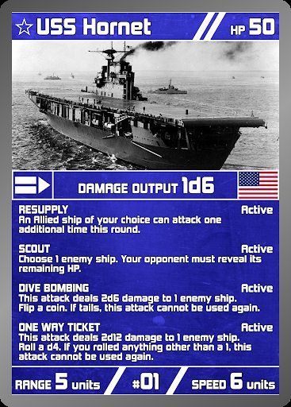
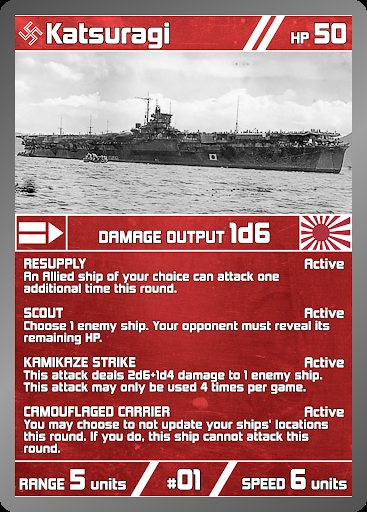

一开始我是按一款带大战略味道的电子游戏来设计它的，核心想法是把海战的信息战搬到桌面上：所有棋子的坐标公开，但舰种和属性完全隐藏。你得像真的指挥官一样，从对手棋子走了几格、用炮击还是空袭这些线索，反推他的舰队配置。
每方还要暗中指定一艘旗舰——旗舰沉了，全舰队瘫一回合。藏好自己的旗舰、找出对面的，就是这个游戏博弈的核心。

一开始我是按一款带大战略味道的电子游戏来设计它的，核心想法是把海战的信息战搬到桌面上：所有棋子的坐标公开，但舰种和属性完全隐藏。你得像真的指挥官一样，从对手棋子走了几格、用炮击还是空袭这些线索，反推他的舰队配置。
每方还要暗中指定一艘旗舰——旗舰沉了，全舰队瘫一回合。藏好自己的旗舰、找出对面的，就是这个游戏博弈的核心。
早期盲测的反馈很直接："这太像一个电子游戏了，要追踪的数据太多。"加上课程要求一节 50 分钟的课里必须打完一整局，我只能对自己的系统下狠手：胜利条件从"全歼敌方舰队"改成击沉一艘关键船就赢；砍掉一堆需要人工运算的次级舰种，只留下战列舰和航母这两种差异最大的单位。
这个项目教会我的不是怎么堆系统，而是怎么剪系统——设计得再精妙，装不进 50 分钟的课时就是零。
伤害靠掷骰子（XdY）判定，随机性一大，公平就成了最大的问题。我在 Excel 里搭了伤害期望和血量模型，反复调参，把战列舰和航母在标准对战里的胜率压在 45%–55% 之间。

